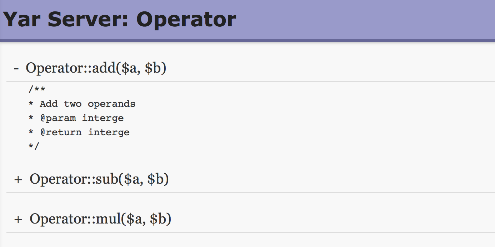

Example #1 Yar Server Example
<?php
/* assume this page can be accessed by http://example.com/operator.php */
class Operator {
/**
* Add two operands
* @param integer
* @return integer
*/
public function add($a, $b) {
return $this->_add($a, $b);
}
/**
* Sub
*/
public function sub($a, $b) {
return $a - $b;
}
/**
* Mul
*/
public function mul($a, $b) {
return $a * $b;
}
/**
* Protected methods will not be exposed
* @param integer
* @return integer
*/
protected function _add($a, $b) {
return $a + $b;
}
}
$server = new Yar_Server(new Operator());
$server->handle();
?>Example #2 Access the server in browser(GET request)
The above example will output something similar to:

Example #3 Yar Client Example
<?php
$client = new yar_client("http://example.com/operator.php");
/* call directly */
var_dump($client->add(1, 2));
/* call via call */
var_dump($client->call("add", array(3, 2)));
/* _add cannot be called */
var_dump($client->_add(1, 2));
?>The above example will output something similar to:
int(3) int(5) PHP Fatal error: Uncaught exception 'Yar_Server_Exception' with message 'call to api Operator::_add() failed' in *
Example #4 Yar Concurrent Client Example
<?php
function callback($ret, $callinfo) {
echo $callinfo['method'] , " result: ", $ret , "\n";
}
/* register async call to remote services */
Yar_Concurrent_Client::call("http://example.com/operator.php", "add", array(1, 2), "callback");
Yar_Concurrent_Client::call("http://example.com/operator.php", "sub", array(2, 1), "callback");
Yar_Concurrent_Client::call("http://example.com/operator.php", "mul", array(2, 2), "callback");
/* sent all request and wait for response */
Yar_Concurrent_Client::loop();
?>The above example will output something similar to:
mul result: 4 sub result: 1 add result: 3